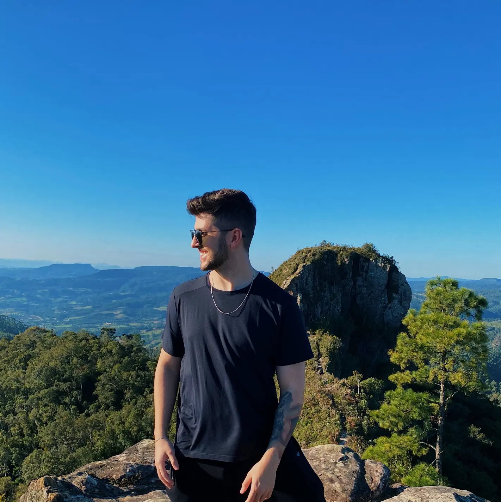

Brasileiro, 21 anos
Rio do Sul, Santa Catarina
diogoveigaferreira@hotmail.com
(47) 988024584
Busco minha realização profissional de se tornar um desenvolvedor competente e que entrega valor.
Sempre fui muito próximo de jogos, aplicativos e computador, então naturalmente descobri meu fascínio por tecnologia. Há 1 ano venho me desenvolvendo nesta área, realizando projetos e buscando conhecimento para colocar em prática minhas habilidades. Tenho uma boa comunicação, muita vontade de aprender e desejo muito participar de uma equipe dinâmica onde eu possa crescer e contribuir para o sucesso dos projetos, sendo assim tenho certeza que minha paixão por programação e dedicação serão um diferencial valioso para sua equipe.
INFNET - ANÁLISE E DESENVOLVIMENTO DE SISTEMAS - 2023 - 2025
Perfeccionista, calmo, honesto, amigável e acima de tudo humilde para poder saber que nem tudo conhecemos e quase tudo podemos aprender com o outro
Tempo:2 anos
Trabalhei com Edições de vídeo, captura, em uma clinica de saúde para criação de Reels, e em um estúdio de gravação para gravação de aulas
tempo:6 meses
Durante minha atuação na empresa, assumia a responsabilidade de realizar e auxiliar no fechamento de estoque dos clientes, oferecendo suporte na definição das regras de negócio relacionadas à industrialização, produção e estoque, quando necessário efetuava correções via banco de dados MySQL. Realizava a análise e testes de processos de mau funcionamento, para assim encaminhar documentação para o setor de análise.
Tempo: 4 meses
Prestei serviços em dois projetos para uma solução especializada em integração com ferramentas de CAD, utilizando C#, Visual Studio, Windows Forms e SQL Server, um projeto utilizei CRUD em sua aplicação com conexão ao banco de dados gerenciado pelo DBeaver juntamente com desenvolvimento front-end, e outro com correções na base local, efetuando testes de qualidade para devido atendimento das regras de negócio